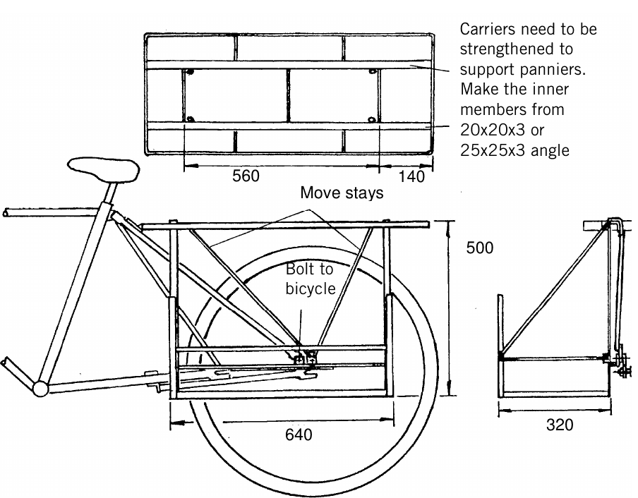
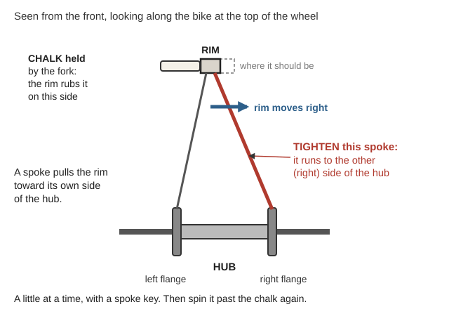
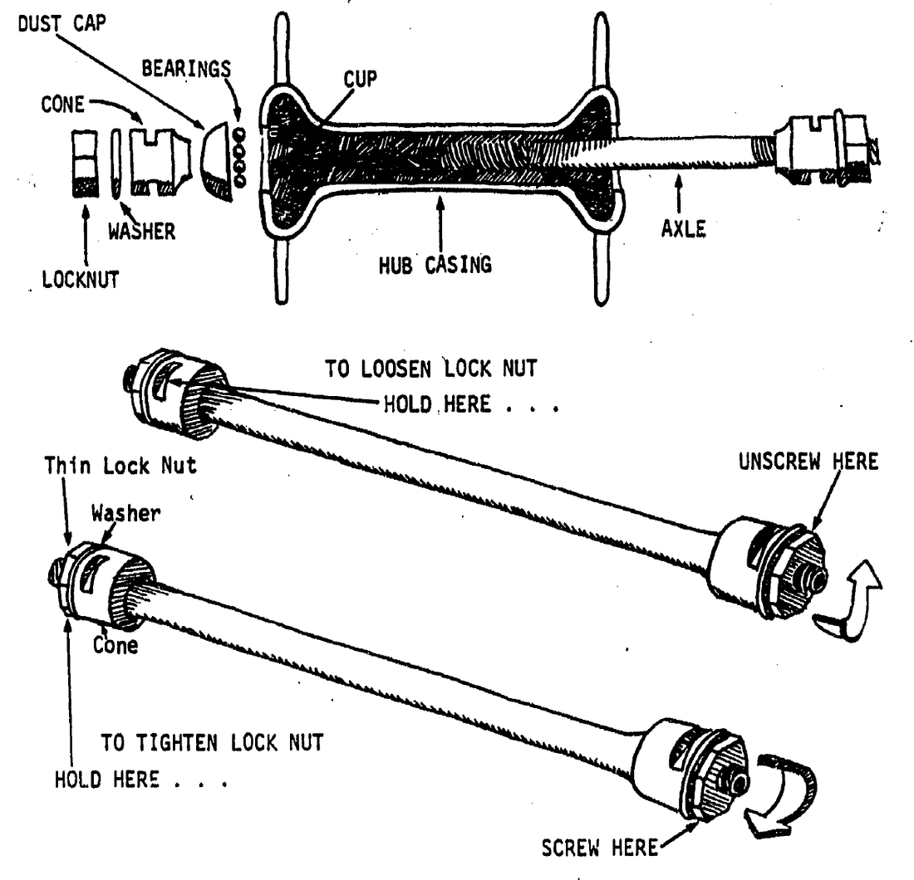
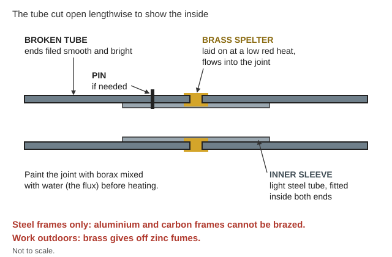

Guides › Getting around · Emergency · Index A–Z
When the gas runs out, everything you move goes on your back, on wheels you push, or on a bicycle. This guide covers how much one person can move and how fast, travel times from Cave Junction, loading a bike, building a trailer (welded steel or no-weld pallets), hitches and trailer brakes, wheelbarrows and handcarts, hills, keeping a bike running with few tools, spares to stock, and local hazards. The books are in Bicycles-Carts\ (Bicycle-Repair and Trailers-Carts). Pack animals, wagons and harness are in Horses-Draft-Animals\ and the Horse guide; brazing and forge work are in Blacksmithing-Tools\ and the Blacksmithing guide.
Know the limits of the books. The repair manuals date from 1896 to 1978. Their methods for tubes, tyres, spokes, cup-and-cone hubs, chains and steel frames still work. But the library has little on modern parts: hydraulic disc brakes, tubeless tyres, indexed ("click") shifting, suspension and e-bikes. Stock their spares (pads, bleed kit and fluid, sealant, cables) now. A plain steel bike with rim brakes is the easiest to keep running (rule of thumb).
⚠️ Rules that prevent the worst outcomes
- A loaded bike takes longer to stop (Adult Cycling Manual, p. 97), and wet rim brakes stop much worse. Start every descent slowly, test the brakes at the top, and remember that a trailer with no brake shoves the bike downhill (rule of thumb).
- Don't wreck your body. A normal day load on your back is 10–20 kg (22–44 lb); 50 kg (110 lb) only for short distances (World Bank, p. 65). Put heavy loads on wheels.
- Never ride a kinked frame tube or fork. A buckled tube is weakened and must be replaced (Burr, p. 73). Keep at least 2 in of seat post inside the frame (Henry, p. 54).
- Never clean parts in gasoline. Use kerosene, diesel or degreaser, outdoors, away from flames.
- Fire season (June–October): don't drag metal. A chain or trailer part scraping on rock can start a wildfire. Haul in the cool early morning and carry water (rule of thumb).
- Braze outdoors, and only steel frames. Brass gives off zinc fumes. Aluminium and carbon frames cannot be brazed.
The biggest lesson in these books: get the load off your back and onto wheels. The World Bank's planning table — rough, order-of-magnitude numbers only (World Bank, p. 66):
| How you move it | Load | Speed | Typical trip |
|---|---|---|---|
| Carried (back or head) | 20 kg (44 lb) | 5 km/h (3 mph) | up to 10 km (6 mi) |
| Sledge (dragged) (Sled) | 100 kg (220 lb) | 4 km/h (2.5 mph) | short |
| Wheelbarrow | 100 kg (220 lb) | 4 km/h (2.5 mph) | about 1 km |
| Handcart | 150 kg (330 lb) | 4 km/h (2.5 mph) | about 5 km (3 mi) |
| Bicycle | 60 kg (130 lb) | 10 km/h (6 mph) | about 20 km (12 mi) |
| Cycle rickshaw or tricycle | 150 kg (330 lb) | 8 km/h (5 mph) | — |
On your back:
On wheels:
Ground matters — effort of walking with a load (Knapik, p. 42):
| Paved road | Dirt road | Light brush | Heavy brush | Swampy bog | Loose sand |
|---|---|---|---|---|---|
| 1.0× | 1.1× | 1.2× | 1.5× | 1.8× | 2.1× |
📚 Go deeper: World Bank Improving Rural Mobility — loads, speeds and costs for every kind of human and animal transport; Knapik Load Carriage — carts, terrain and injuries; Use of the Packboard — illustrated loading and lashing.
Walking pace with a load (FM 21-18, p. 89): on roads 4.0 km/h (2.5 mph) by day, 3.2 km/h at night; cross-country 2.4 km/h by day, 1.6 km/h at night. A normal day is 20–32 km (12–20 mi), or 5–8 hours on the move.
In hills, plan by time, not miles. Add one-third to the map distance, then 1 hour for every 1,000 ft (300 m) of climb, or every 2,000 ft (600 m) of descent (FM 3-97.6, p. 72).
From Cave Junction (library walking routes: highway miles, back roads in brackets):
| To | Miles | On foot (15 mi a day) | Loaded bike at about 6 mph | By car, normal times |
|---|---|---|---|---|
| Grants Pass | 29 (40) | 2 days (3) | about 5 hours (7) — one day | 44 min |
| Crescent City | 53 (64) | 4 days (4) | about 9 hours (11) — a long day or two | 1 h 15 min |
| Medford | 59 (62) | 4 days (4) | about 10 hours (10–11) — a long day or two | 1 h 23 min |
| Roseburg | 101 (122) | 7 days (8) | about 17 hours (20) — 2–3 days | 2 h 11 min |
Car times are normal driving times with roads open, from the route pages. Bike times use the World Bank's loaded-bicycle speed of 10 km/h (p. 66) and are moving time only. Add the climbing allowance, rests, flats and pushing up steep grades (rule of thumb). A handcart moves at walking pace but carries several times as much.
Local notes (Start Here guide): back roads are longer, steeper and remote, and high passes can get snow. After a Cascadia quake, expect landslides and broken bridges on routes like US-199. Walking, bicycle and driving routes with GPX tracks for 359 towns are in Walking-Routes\WALKING-ROUTES.html.
📚 Go deeper: FM 21-18 Foot Marches — march rates, halts, loads and foot care; FM 3-97.6 Mountain Operations — time rules for steep country.
🎒 Walking instead? Loads, packs, feet, water, camps, river crossings and safety on the road are in On Foot.
How to load it (Adult Cycling Manual, p. 97):
Making a bike carry more (Practical Action, Bicycles):

A pannier frame bolted to the carrier, sizes in mm (640 long, 500 tall, 320 wide); the carrier is strengthened with steel angle (Practical Action, p. 2).Pushing big loads: in Zambia, people pushed two 50 kg sacks of maize on one bicycle up to 30 km (19 mi) to town (Bicycle Trailers in Zambia, p. 1).
Before a loaded trip (rule of thumb): tyres firm, brakes grabbing hard, carrier bolts tight, nothing able to swing into the spokes, and patch kit, pump and water aboard. Learn the names of the parts from a labeled bicycle drawing (the key is on p. 31).
📚 Go deeper: Adult Cycling Manual — loaded touring and riding skills; Practical Action Bicycles — dimensioned pannier frames and carrier extensions. Pictures: Cargo bike.
A trailer lets a rider move about three times the bike's own load, roughly 200 kg (450 lb) (Practical Action, Bicycle Trailers, p. 1).
But not always. In northern Ghana, trailers promoted in the 1990s failed: heavy to pull loaded, poor on footpaths, and twice the cost of a bicycle. A plain bike with a strong carrier was more flexible (World Bank, p. 39).
Welded steel trailer (Bicycle Trailers, pp. 3–4; frame drawings: p. 2, p. 3):
No-weld pallet trailer — about one day and about 20 euros (Low-tech Lab). You need 2 pallets, 2 bicycle wheels, wood screws and 1 old inner tube; a crowbar, hammer, saw and screwdriver.
Hitches (Bicycle Trailers, p. 4; hitch design; Poston's scrap-steel hitch):
Trailer brakes and carrying the injured (Bicycle Ambulance, pp. 2–3; frame diagram): a stretcher trailer carries two people, with a shock absorber and a ball-joint hitch so the bike can turn. Its overrun brake works by itself: when the bike slows, the trailer pushes a rod into a sprung tube, which pulls a brake cable on the trailer wheel. No trailer brake? Slow down early, drag a foot, or walk it down steep hills (rule of thumb).
📚 Go deeper: Practical Action Bicycle Trailers — parts list with tube sizes and frame drawings; Low-tech Lab pallet trailer — the no-weld build; Bicycle Ambulance — hitch and overrun-brake part sizes; Trailer Hitch (Poston) — a lathe-free hitch from scrap steel and rubber. Pictures: Bicycle trailer.
A better wheelbarrow (Wilson, The Wheelbarrow):
Handcarts:
Sledges are cheap and narrow, and go where carts can't — too steep, muddy or narrow. But they pull harder, snag on stumps, and their ruts turn into gullies (Starkey, p. 83; simple wooden sledge; Sled).
Travois (behind a horse or mule): two straight poles 14–20 ft long with a platform 2–3 ft wide behind the animal, and three people to handle it at ditches and streams (FM 25-7, p. 166; travois drawing).
📚 Go deeper: Wilson The Wheelbarrow — the big-wheel barrow and a homemade wheel; Wheelbarrow construction drawings — six dimensioned sheets for a steel barrow; Selvidge, p. 104 — replacing a wagon spoke, and p. 95 — shrinking on an iron tyre. Pictures: Wheelbarrow, Travois.
The extra push on a slope is roughly the total weight times the grade (rule of thumb, simple physics). A 10% grade rises 10 ft for every 100 ft along the road (Grade).
| Grade | Extra push for a 220 lb (100 kg) load |
|---|---|
| 5% | about 11 lb |
| 10% | about 22 lb |
| 15% | about 33 lb |
That is on top of the push needed on the flat. (Rules of thumb:)
📚 Go deeper: Knapik Load Carriage — terrain factors and energy cost; FM 3-97.6 — moving in steep country.
Patching a tube (Henry, pp. 61–65):
Tips: old inner tubes make good patch rubber (p. 61). A patch kit more than a year old may have gone bad (p. 62). If a tyre goes soft with no hole, check the valve first (p. 62). Tyres lose 10–20 psi within a week anyway, so check pressure often (Adult Cycling Manual, p. 72).
Booting a cut or burst tyre:
📚 Go deeper: Henry Cycle Building and Repairing — tyres, tubes, valves and repairs; Adult Cycling Manual — the tool and tyre kit. Pictures: Bicycle tire.
Truing a wobbly wheel (Henry, pp. 44–46; truing a wheel in its own fork with chalk; Wheelbuilding):

Rim rubbing the chalk on the left? Tighten the spokes that run to the right side of the hub, a little at a time (a diagram drawn for this guide).Hub bearings (Henry, pp. 46–47; hub parts named; cup, cone, balls and locknut, with how to hold the spanners):

The parts of a cup-and-cone hub, and the two-wrench grip: hold the cone still while you turn the locknut against it (Adult Cycling Manual, p. 58).Chains:
📚 Go deeper: Henry — lacing and truing wheels, hubs and chains; Adult Cycling Manual, p. 103 — chain cleaning, oiling and stiff links; Burr Bicycle Repairing — bearings, forks and shop-made tools. Pictures: Bicycle wheel, Bicycle chain.
Rim brakes (Adult Cycling Manual, p. 48; center-pull and side-pull brakes): released, the pads should sit about 1/16 in from the rim, and they should hit the rim before the lever reaches the handlebar. New cables stretch — tighten them again after about a week.
Derailleur gears (p. 81; rear derailleur with its screws lettered): won't shift onto the largest cog? Back out its limit (stop) screw. Still short? Take up cable slack with the barrel adjuster. Shifts by itself? Tighten the thumbscrew holding the shift lever.
Field fixes:

The mend from steps 1–5, cut open: a sleeve inside both broken ends, brass flowed into the joint (a diagram drawn for this guide).Old words in the old books: paraffin = kerosene; French chalk = talc; spanner = wrench; cover = tyre; solution = rubber cement.
📚 Go deeper: Adult Cycling Manual — brake, derailleur, headset and bottom-bracket adjustment; Rowe Hard Soldering — brazing with blowpipe, charcoal or forge; Burr — frame tubes, lugs and forks. Pictures: Bicycle brake, Derailleur, Brazing.
(Rule of thumb, building on the kit list in the Adult Cycling Manual, p. 34.)
Match tyres by the ISO number on the sidewall, not by "26 inch." A size like 37-622 means 37 mm wide on a 622 rim (rule of thumb). (ISO 5775 tyre sizes)
| ISO rim number | Sold as |
|---|---|
| 559 | 26-inch mountain bike |
| 584 | 650B (also called 27.5) |
| 622 | 700C, or 29er |
| 590 | old "26 × 1 3/8" (3-speeds) — will not fit a 559 rim |
Valves: Schrader (car-type) valves fill from any car pump; Presta (thin) valves need a matching pump head or adapter. Store rubber cool and dark, away from electric motors, which make ozone that cracks it (rule of thumb).
📚 Go deeper: Adult Cycling Manual, p. 34 — tool kit and tyre kit lists; Henry, p. 61 — patch rubber from old tubes. Pictures: Presta valve, Schrader valve.
(Rules of thumb for our area.)
📚 Go deeper: Adult Cycling Manual, p. 97 — riding a loaded bike safely; Knapik, p. 37 — carts on rough ground.
📚 Go deeper: Henry, p. 46 — the sound old method: hubs cleaned in kerosene; Adult Cycling Manual, p. 103 — kerosene chain cleaning.
Look before you try it. 🖼️ = drawings in the books on this drive; 📷 = photos in the offline Wikipedia.
Carrying loads
Loading a bicycle and trailers
Wheelbarrows, carts, sledges and travois
Wheels, tyres and chains
Brakes, gears and frames
Local hazards